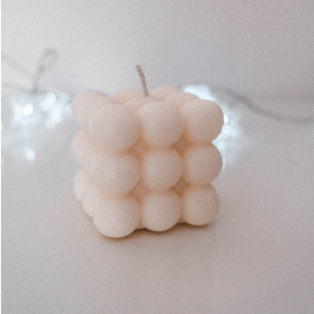
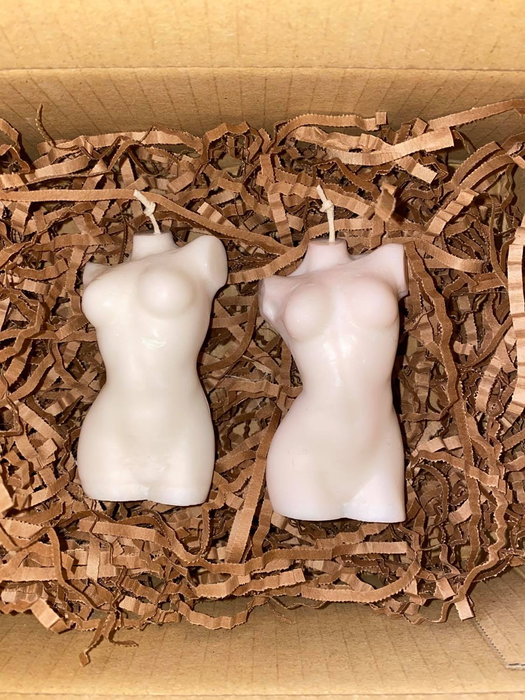
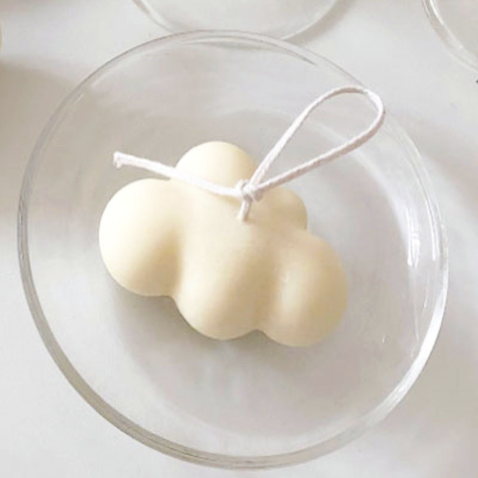

Strona poświęcona mojemu hobby
Jednym z moich ulubionych zajęć w domu jest odlewanie świec z wegańskiego wosku sojowego.
  
Na zdjęciach jedne z form, które wykonuję
| Krok pierwszy | Przygotowanie odpowiedniej ilości wosku, czyli ważenie. |
| Krok drugi | Dezynfekcja formy oraz przygotowanie knota. |
| Krok trzeci | Wytapianie w gorącej kąpieli wcześniej przygotowanego wosku. |
| Krok czwarty | Wlanie płynnego wosku do formy. |
| Krok piąty | Wyciągnięcie schłodzonej świecy z formy |
Moje wyroby, głównie daję jako małe prezenty rodzinie i znajomym,
kilka razy miałam okazje wykonywać świece na zlecenie.